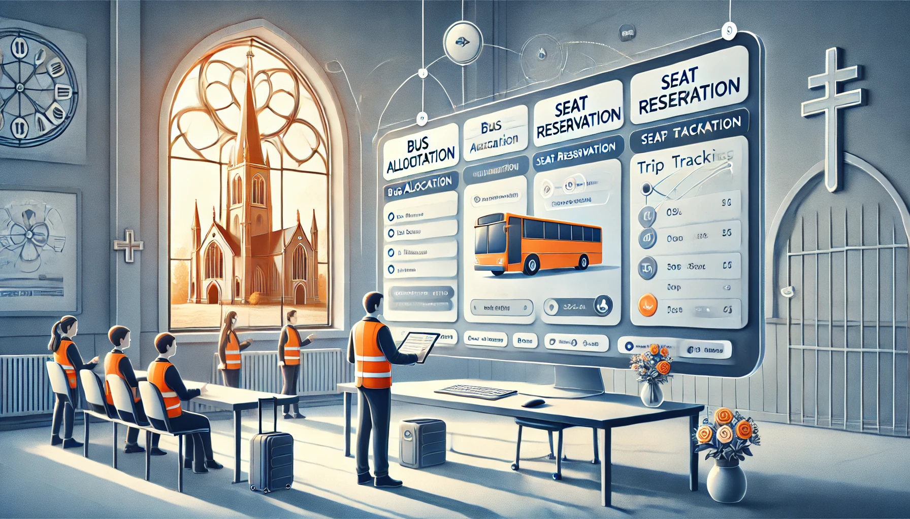
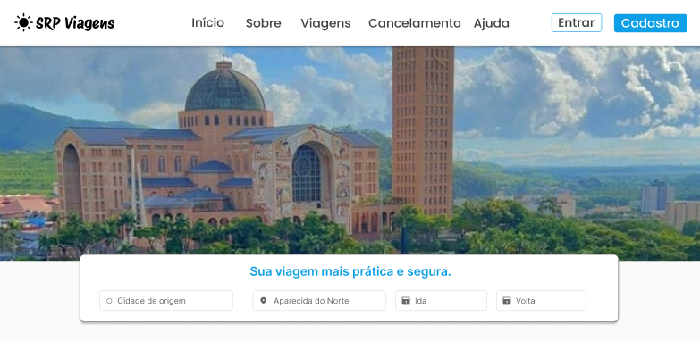
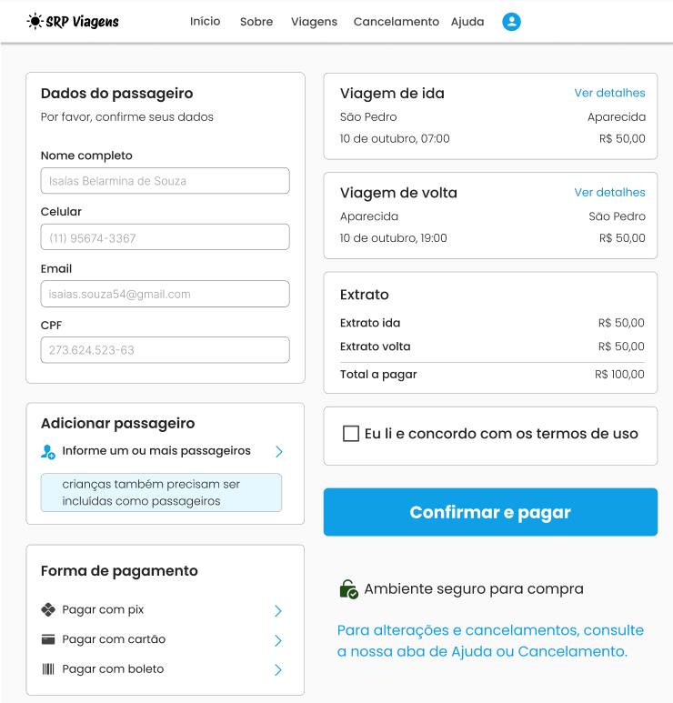

SRP - Sistema de Reserva e Gerenciamento para Paróquias
O projeto consistiu no desenvolvimento de um sistema web completo para gerenciar a organização de viagens de paróquias, incluindo a alocação e controle de ônibus. O sistema foi projetado para facilitar o planejamento, a reserva de assentos e o acompanhamento de viagens realizadas pela paróquia, com uma interface intuitiva e funcionalidades alinhadas às necessidades dos usuários.
Metodologias:
O projeto foi desenvolvido seguindo a metodologia ágil Scrum.
Responsabilidades:
P.O, Front-End & Back-End.

